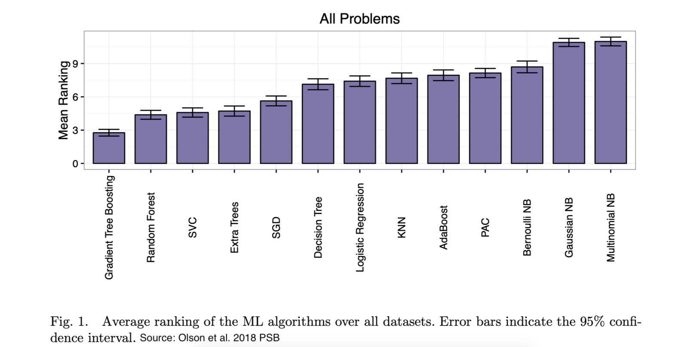
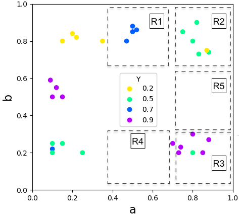
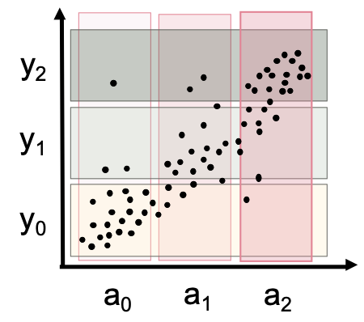
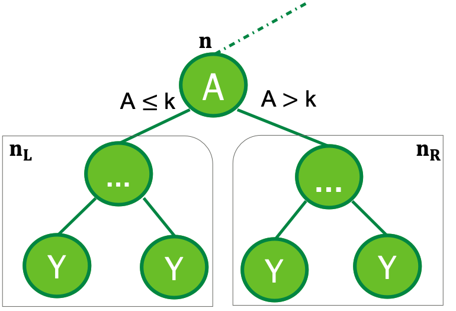
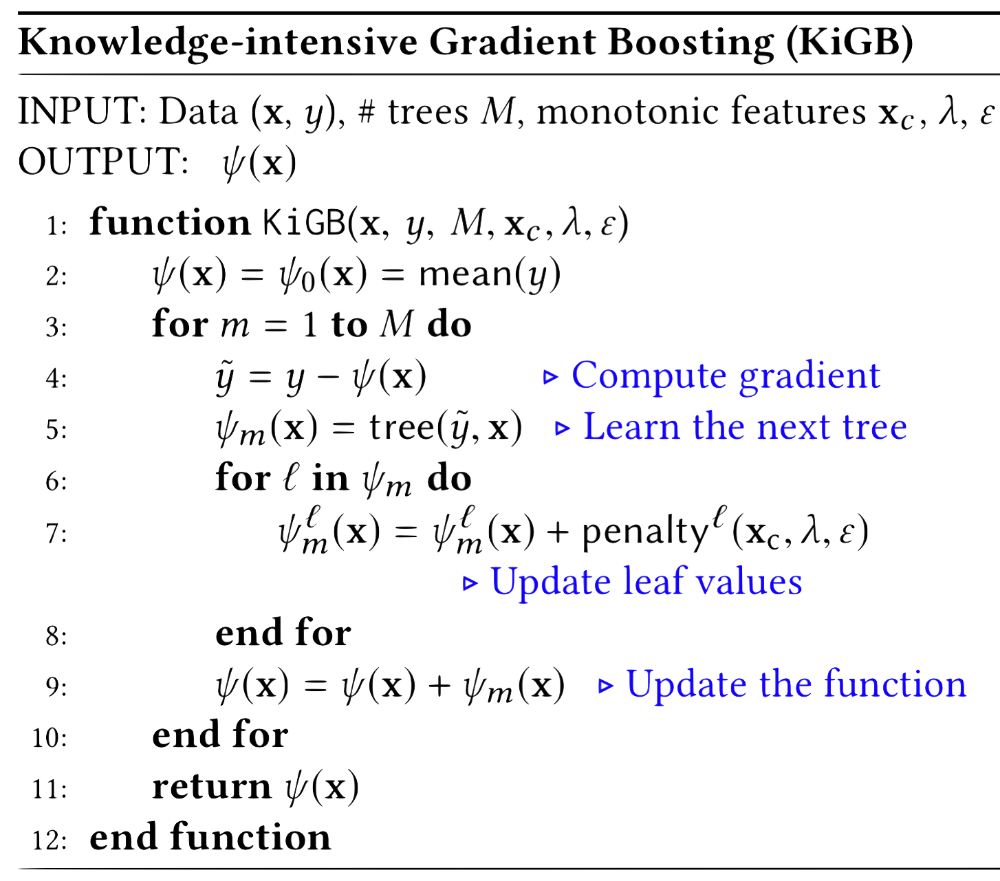

Knowledge-intensive Gradient Boosting
Harsha Kokel, Phillip Odom, Shuo Yang, Sriraam Natarajan · AAAI 2020
Tree-based gradient boosting is powerful, but it fails in regions where data is absent or mostly noisy. In real-world problems, data is often sparse and noisy — can we leverage qualitative domain knowledge for exactly those regions? Our Knowledge-intensive Gradient Boosting approach provides a way to do that.

Given a sparse/noisy dataset and some qualitative knowledge of the domain, KiGB learns boosted trees. That knowledge is expressed as monotonic influences: for a dataset where monotonic influence $a_{<}^{Q+}y$ holds, higher values of variable $a$ stochastically result in higher values of target $y$.

Dataset with X-Y axes representing features $a$ and $b$; color/shape represents target $y$.

Monotonic influence of feature $a$ on target $y$.
In ordinal-restricted statistics, monotonic influence implies the constraint $a_1 < a_2 \implies \psi(a_1) \leq \psi(a_2)$. Following Altendorf et al. (UAI 2005) and Yang & Natarajan (ECML-PKDD 2013), this becomes a constraint on the probability distribution: $a_1 < a_2 \implies P(Y\leq k \vert \boldsymbol{pa_y^{a_1}}) \geq P(Y\leq k \vert \boldsymbol{pa_y^{a_2}})$.
We use an analogous constraint at each tree split: when a node splits on a variable with a monotonicity constraint, the expectation of the left subtree should be less than that of the right (assuming a $\leq$ split criterion):

for node A, $\mathbb E_{\psi}[\boldsymbol n_L] \leq \mathbb E_{\psi}[\boldsymbol n_R]$
allowing some margin/slack for overlap, $\mathbb E_{\psi}[\boldsymbol n_L] \leq \mathbb E_{\psi}[\boldsymbol n_R] + \varepsilon$
we obtain the following constraint, which we name $\zeta$:
When $\zeta$ is greater than $0$ the constraint is violated. We modify the objective to include a loss function with $\zeta$:
Here, parameter $\lambda$ determines the importance of advice. Taking the gradient of the modified objective gives a leaf-update equation:
Notice the penalty is directly proportional to the violation and inversely proportional to the number of data points — a trade-off between advice and data. Equilibrium is reached by tuning the hyperparameters $\varepsilon$ and $\lambda$.

For empirical evaluations, background on other monotonicity-based approaches, and the full gradient derivation, see our AAAI 2020 paper. Code and usage guide: github.com/harshakokel/KiGB.
Citation
@inproceedings{kokelaaai20,
author = {Harsha Kokel and Phillip Odom and Shuo Yang and Sriraam Natarajan},
title = {A Unified Framework for Knowledge Intensive Gradient Boosting: Leveraging Human Experts for Noisy Sparse Domains},
booktitle = {AAAI},
year = {2020}
}
Acknowledgements
Harsha Kokel and Sriraam Natarajan acknowledge the support of Turvo Inc. and CwC Program Contract W911NF-15-1-0461 with the US Defense Advanced Research Projects Agency (DARPA) and the Army Research Office (ARO).